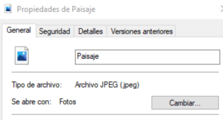
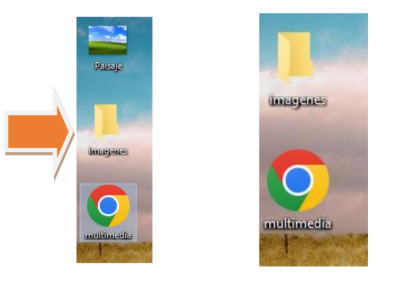
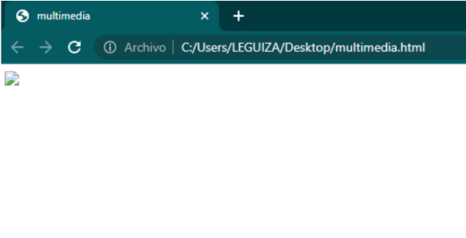
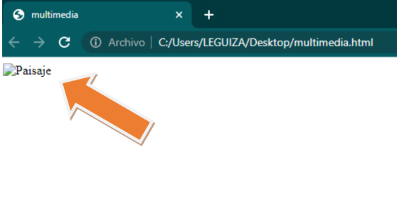
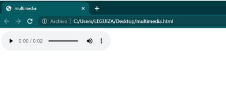
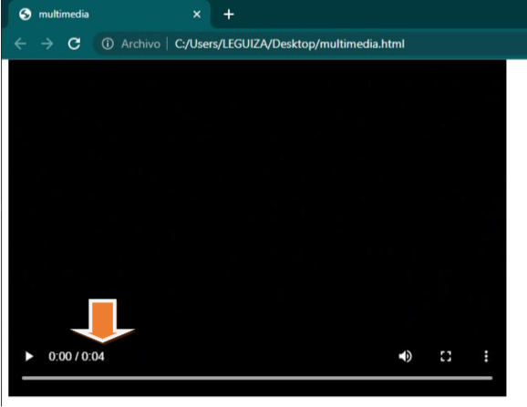
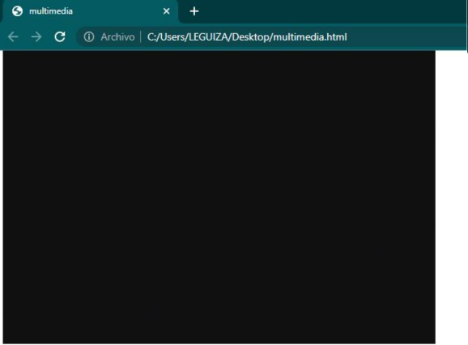
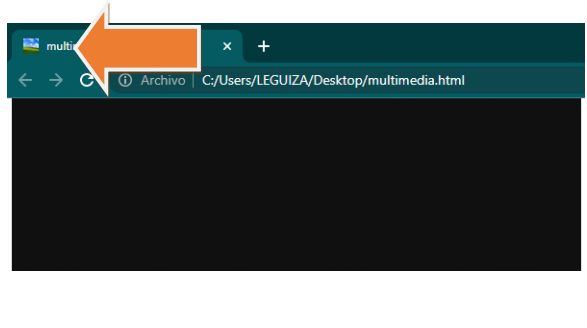

Las etiquetas multimedia permiten la incorporación de imágenes, sonido y video en nuestros documentos a través de una serie de etiquetas con atributos específicos.
En este módulo nos enfocaremos en poner en práctica las etiquetas de imagen, audio y video.
Comenzaremos con la etiqueta de imagen img. Para insertar una imagen en nuestro código HTML, utilizamos la siguiente sintaxis:
<img src="URL_RUTA_de_la_imagen">En este caso, usamos el atributo src (Abreviatura de source, que significa "fuente" en inglés), el cual especifica la ubicación o dirrección del archivo de la imagen que queremos mostrar.
El atributo src contiene la ruta que indica la ubicación de la imagen que deseamos mostrar en el documento. Esta ruta puede ser relativa o absoluta, de forma similar a como el elemento <a> emplea el atributo href para enlazar a otras direcciones.
<body>
<img src=" "></img>
</body>Visualmente, no se mostrará ninguna imagen en el documento hasta que proporcionemos una URL externa o una ruta local válida que apunte al archivo de imagen.
Para insertar una imagen alojada en un servidor externo, es necesario utilizar el protocolo de transferencia (Como https://), seguido de // y el nombre de dominio. Por ejemplo https://www.google.com, seguido del resto de la ruta que lleva al archivo de imagen.
Para insertar una imagen desde nuestro equipo, basta con indicar la ruta donde se encuentra el archivo. Es fundamental asegurarse de que el archivo tenga una extensión de imagen válida, como .jgp, .jpeg o .png.
Como por ejemplo, utilizaremos una imagen llamada Paisaje con la extensión .jpeg.

Para que el siguiente ejemplo funcione correctamente, la imagen y el archivo HTML deben ubicados en la misma carpeta.
En el atributo src de la etiqueta img, debemos escribir el nombre del archivo de imagen, que en este caso es Paisaje, seguido de su extensión Paisaje.jpeg
<body>
<img src="Paisaje.jpeg">
</body>
Si guardamos la imagen Paisaje dentro de una carpeta, la ruta del archivo cambiará, y en consecuencia, también deberá cambiar el valor del atributo src. A continuación, crearemos una nueva carpeta parar almacenar la imagen y luego modificaremos la ruta del atributo src apunte correctamente al archivo Paisaje.jpeg.

Ahora realizaremos un ejemplo para observar qué ocurre con la etiqueta img cuando no se actualiza correctamente la ruta en el atributo src.
En el código HTML, eliminaremos la parte que hace referencia a la carpeta imagenes/ y dejaremos únicamente Paisaje.jpeg como valor del atributo src.
<body
<img src="Paisaje.jpeg">
</body>
Cuando aparece un ícono de imagen rota, significa que el navegador intento cargar el archivo especificado en la etiqueta img, pero no puedo encontrarlo. La solución ideal sería corregir la ruta del archivo en el atributo src. Sin embargo, si no es posible modificar la ruta, existe una alternativa útil el atributo alt.
El atributo alt sirve para propocionar un texto alternativo o uaa descripción de la imagen. Es una buena práctica incluirlo siempre en las etiquetas img, ya que mejora la accesibilidad y ofrece información útil cuando la imagen no se puede mostrar.
En esta caso, añadiremos el atributo alt a nuestra etiqueta img y escribiremos como valor el texto: Paisaje.
<body>
<img src="Paisaje.jpeg" alt="Paisaje">
</body>
En nuestro documento HTML, seguirá apareciendo el icono de una imagen rota, pero visualmente también veremos su descripción que dice Paisaje.

El uso de la etiqueta audio es muy similar al de la etiqueta img. Al igual que con las imágenes, se utiliza el atributo src para indicar la ruta del archivo de audio, y el atributo alt puede emplearse para proporcionar un texto descriptivo alternativo (Aunque no es estánder en audio). Además, en la etiqueta audio es necesario inclui el atributo controls para que el navegador muestre los controles de reproducción, como reproducir, pausar o ajustar el volumen.
En HTML, la etiqueta audio no utiliza el atributo alt. A diferencia de la etiqueta img, que sí usa alt para mostrar un texto alternativo cuando la imagen no se carga, en el caso de audio, el contenido alternativo se coloca entre las etiquetas de apertura y cierre (...)
Este contenido se muestra solo si el navegador no admite la reproducción de audio, funcionando como una alternativa para el usuario.
<body>
<audio src="audio.mp3" controls>
Tu navegador no soporta la reproducción de audio o no se encontro el audio.
</audio>
</body>
En este caso, si el navegaddor no puede reproducir el audio, se mostrará el texto Tu navegador no soporta la reproducción de audio.

La etiqueta video. Su uso es muy similar al de la etiqueta audio, pero en este caso incluiremos algunos algunos atributos adicionales que resultan útiles para mejorar la experiencia del usuario.
<body>
<video src="video.mp4" controls></video>
</body>
Ahora veamos la misma etiqueta, pero sin el atributo controls.
Código: <body>
<video src="video.mp4">
</body>
Al quitar el atributo controls, veremos la primera imagen del video pero no tendremos la opción de controlar la reproducción del mismo
El atributo alt fue diseñado específicamente para contenido no multimedia, como imágenes, donde se necesita mostrar una descripción alternativa si el archivo no se carga.
<body>
<video src="ejemplo.mp4" controls>
Tu navegador no soporta la reporudcción del video o no lo encontro.
</verde>
</body>
Ahora aprenderemos cómo añadir un ícono a la pestaña del navegador utilizando la etiqueta link. Para ello, debemos establecer el atributo rel con el valor shortcut icon y, además, utilizar el atributo href para indicar la ruta del archivo de imagen que deseamos usar como ícono.
El favicon es un pequeño ícono que representa visualmente un sitio WEB. Aparece en la pestaña del navegador, junto al título de la página, y también cuando el sitio se guarda como favorito o marcador. Ayuda a mejorar la identidad visual y la experiencia del usuario.
Código:
<head>
<link rel="shortcut icon" href="favicon.ico" type="image/x-icon">
</head>
Cuando ingresamos una imagen como icono de pestaña, podemos utilizar cualquier formato de imagen, pero es una buena práctica convertir la imagen a la extensión .ico. PAra hacer esto, aquí les comparto un sitio web donde pueden realizar esta conversión:
